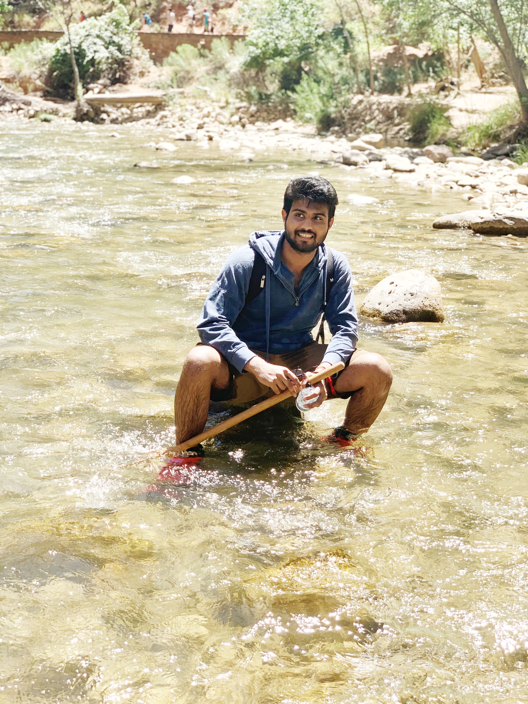

Hi, I'm
Building AI-first production systems in a highly regulated domain. Specializing in distributed systems, cloud-native architecture, and agentic workflows.
Senior Software Engineer at SAP Concur, currently all in on AI-augmented engineering — designing and building internal MCP tooling, multi-agent workflows, and a growing library of AI skills that a small team now relies on to ship, monitor, and maintain a highly regulated business travel platform at pace.
Over 4+ years at SAP Concur, I've grown from building cloud-native microservices during a multi-year monolith-to-microservice re-platforming, to owning design decisions and latency-critical optimizations across mission-critical distributed systems serving corporate travelers worldwide.
I'm most drawn to problems where production software engineering meets applied AI — where the right infrastructure, thoughtful design, and safe agentic workflows unlock outcomes small teams couldn't reach otherwise.

SAP Concur • Full-time • Allen, TX
Full pivot to AI-augmented engineering — building internal MCP tooling, agentic workflows, and AI skill libraries the team depends on to ship, monitor, and maintain production systems at pace.
SAP Concur • Full-time • Allen, TX
Stepped into design ownership — architecting key capabilities of the business travel product and optimizing latency-critical paths across distributed systems.
SAP Concur • Full-time • Allen, TX
Builder phase — architected and delivered Go microservices from scratch, replacing legacy monolith components with cloud-native distributed systems.
Microchip Technology Inc • Full-time • Chandler, AZ
Streamlined credit card order processing and EDI integration for e-commerce platform serving enterprise customers.
Nipun Net Solutions • Full-time • India
Built real-time inventory tracking dashboards and improved application performance through cloud infrastructure optimization.
Production health monitoring system automating service reviews across multiple environments. Multi-agent TypeScript system with LangGraph.js orchestrating parallel telemetry collection, intelligent triage, and automated report generation.
12-week structured interview preparation dashboard with progress tracking for 130 LeetCode problems across 16 patterns. GitHub-integrated progress sync and confidence tracking.
Self-hosted personal finance platform with end-to-end encryption. Built as a Progressive Web App with FastAPI backend and React frontend, deployed on AWS with Tailscale-only access.
Personal job search management platform forked from career-ops. Multi-profile support with application tracking, document management, and interview preparation tools.
Full-stack e-commerce web application with product catalog, shopping cart, user authentication, and payment integration. Built as part of graduate coursework.
Collection of ML/DL projects including computer vision, NLP, and data mining experiments. Implementations of various algorithms and neural network architectures.
Distributed edge computing application for efficient object detection using AWS deep learning AMI. Custom load balancer ensures elasticity with auto-scaling based on demand.
Full-stack web application helping students create virtual study rooms with chat sessions, discussion forums, and authentication. Deployed on Google Cloud Platform.
Android mobile application for learning and classifying American Sign Language gestures. RESTful service captures human key points from video and returns gesture labels.
Task-oriented dialog system for chatbot intent classification and out-of-scope prediction. Evaluated BERT, DialogFlow, MLP, CNN, SVM with various word embeddings.
Problem Solving: Active on competitive programming platforms with consistent practice in algorithms and data structures. Regular contributor to coding challenge repositories including LeetCode, NeetCode, and algorithm implementation exercises.
Explore More Projects on GitHubInterested in collaboration, discussing AI-augmented engineering, or exploring distributed systems challenges? Let's connect!